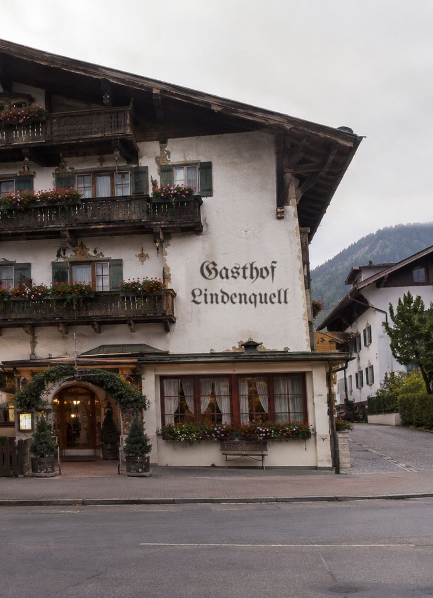
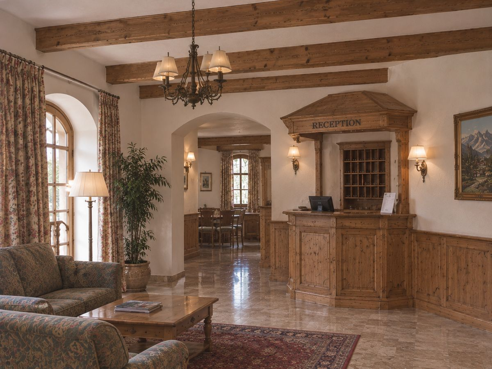
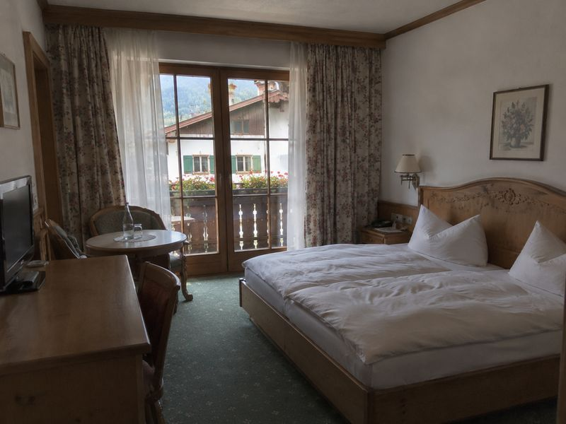
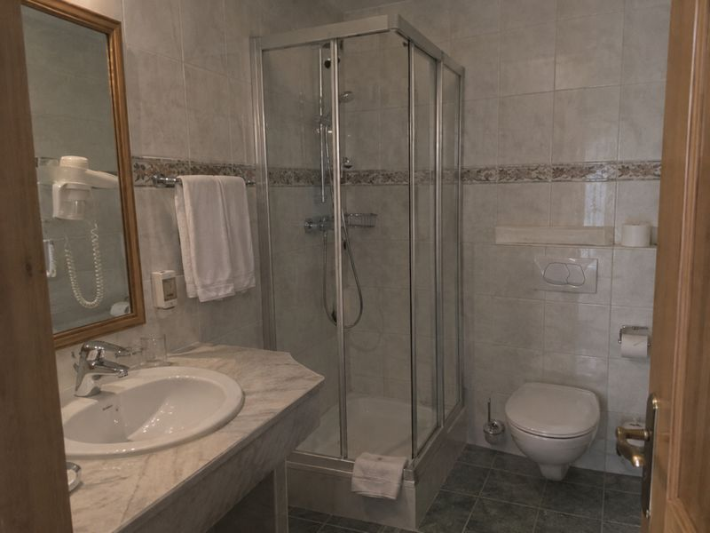

Gasthof
Lindenquell
Wirtsstube und Gästezimmer · mitten im Dorf
Mittwoch bis Sonntag geöffnet

Aus der Küche
Mittags 11:30–14:00, abends ab 17:30 Uhr. Am Sonntag durchgehend bis 20:00 Uhr.
Bayerische Wirtshausküche ohne Umwege: Braten aus dem Ofen, Knödel von Hand gedreht, und am Freitag gibt es Fisch aus dem Weiher hinterm Dorf.
-
Schweinsbraten mit Kruste
Dunkle Biersoße, Kartoffelknödel und warmer Krautsalat
16,90 €
-
Kässpatzen
Mit Bergkäse und Röstzwiebeln, dazu ein kleiner grüner Salat
13,50 €
-
Obatzda mit Breze
Hausgemacht, mit Radieserl und roten Zwiebeln – für die Brotzeit am Nachmittag
8,90 €
-
Rinderroulade
Geschmort in Rotwein, mit Blaukraut und Kartoffelpüree
19,50 €
-
Kaiserschmarrn
In der Pfanne gerissen, mit Zwetschgenröster – reicht auch für zwei
10,90 €
Auszug aus der Karte. Gerichte und Preise sind Beispiele für dieses Konzeptprojekt.
Familienfeier oder größere Runde? Die Wirtsstube hat Platz für 40 Gäste.
Öffnungszeiten
Montag und Dienstag Ruhetag
- Montag
- Ruhetag
- Dienstag
- Ruhetag
- Mittwoch
- 11:30–14:00 und 17:30–22:00
- Donnerstag
- 11:30–14:00 und 17:30–22:00
- Freitag
- 11:30–14:00 und 17:30–23:00
- Samstag
- 11:30–14:00 und 17:30–23:00
- Sonntag
- 11:30–20:00
Die Zimmer sind auch an den Ruhetagen buchbar.

Das Haus
Der Lindenquell steht an der Dorfstraße, gegenüber dem Brunnen unter der alten Linde, der dem Haus den Namen gab. Unten die Wirtsstube mit Kachelofen, oben vierzehn Gästezimmer – geführt wie seit drei Generationen: herzlich, unkompliziert und mit Zeit für ein Gespräch am Stammtisch.
«Der Schweinsbraten war genau so, wie er sein muss. Und die Wirtin hat uns gleich die schönste Wanderung für den nächsten Tag aufgemalt.»
«Ruhiges Zimmer mit Balkon, super Frühstück mit Eiern vom Hof nebenan. Wir kommen im Herbst wieder.»
«Mit zwei kleinen Kindern im Wirtshaus – kein Problem. Malstifte auf dem Tisch, Kinderportion ohne Nachfragen.»
Beispieltexte: So erscheinen Gästestimmen auf der fertigen Website.
Rund ums Dorf
- Wandern
- Vom Haus führt der Weg in einer Stunde auf den Hausberg, oben wartet eine bewirtschaftete Alm.
- Baden und Radfahren
- Der Badesee liegt zwei Kilometer entfernt, der Radweg durchs Tal beginnt am Dorfplatz.
- Im Winter
- Loipe hinter dem Dorf, Rodelbahn am Hausberg und Eisstockschießen auf dem Weiher.
- Im Dorf
- Barockkirche mit Zwiebelturm, Bauernmarkt am Samstag und Maibaum vor dem Gasthof.
Übernachten
«Morgens das Läuten vom Kirchturm, abends ein Helles in der Stube – mehr braucht es nicht.»
Vierzehn Zimmer mit Holzmöbeln, Federbetten und eigenem Bad, die meisten mit Balkon. Das Frühstück mit Brot vom Dorfbäcker ist im Preis enthalten.


Demo – keine echte Buchung. Preise pro Zimmer und Nacht inklusive Frühstück.
Anreise
Gasthof LindenquellDorfstraße 1Musterdorf +49 8000 000000 kontakt@gasthof-lindenquell.exampleDer Gasthof liegt in der Dorfmitte, gegenüber Brunnen und Linde. Sie erkennen das Haus an der bemalten Giebelwand mit dem Schriftzug.
- Mit der Bahn
- Vom Bahnhof sind es acht Minuten zu Fuß. Mit Gepäck holen wir Sie nach kurzer Anfrage ab.
- Mit dem Auto
- Kostenlose Parkplätze hinter dem Haus, zwei Ladepunkte für Elektroautos.
- Ankunft
- Zimmer ab 15 Uhr. An Ruhetagen liegt der Schlüssel nach Absprache bereit.
- Abreise
- Bis 11 Uhr. Das Gepäck kann gern bis zum Nachmittag bleiben.
Adresse, Telefon und E-Mail sind Platzhalter: Der Gasthof Lindenquell ist ein erfundenes Haus.